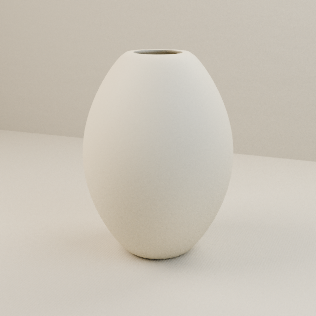
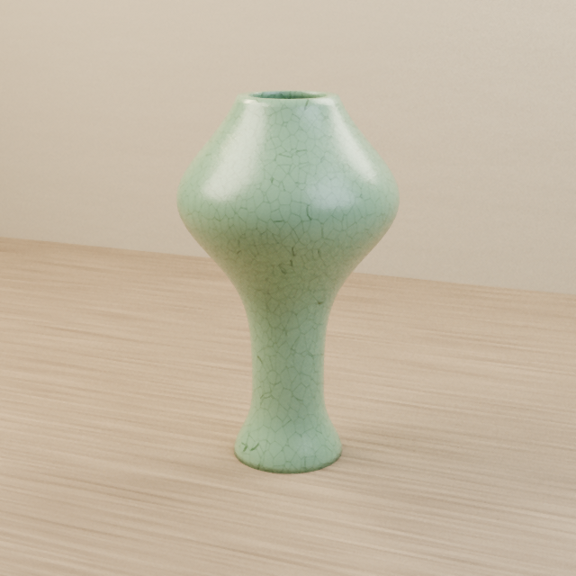
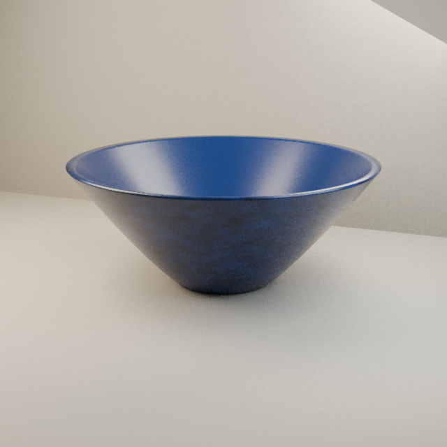

사진 생성으로 새 도자기를 만드는 대신, 직접 빚은 모양과 칠한 무늬를 그대로 가져와 조명과 재질을 계산해요.
완성 사진은 브라우저에서 바로 볼 수 있어요. 고화질 촬영은 별도의 렌더링 서버가 연결된 경우에 사용할 수 있어요.
기본 완성 사진은 별도 설치 없이 볼 수 있어요. 고화질 촬영에는 렌더링 서버 연결이 필요해요.
실제 도자기 모양 데이터를 Blender로 렌더링한 예시예요.배경만 바꾸는 방식과 달리, 재질과 빛·그림자를 함께 계산합니다.



예시는 렌더링 품질을 확인하기 위한 작품입니다. 직접 빚은 작품도 같은 촬영 과정을 거치며, 모양·유약·무늬에 따라 결과는 달라져요.